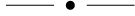

Who am i?
" My name is Dasa and I am from Mars"
Or at least I feel like that. Sometimes.
Apart from Mars i come from Slovakia and i already have been here for one year and half. I was previosly studying Tourism management in Denmark, but i did not really enjoy this programme so i have decided to follow my heard and apply for Multimedia design.
I like the most design part, creating my own characters in Illustrator or making XD prototypes. I am beginner in all areas of design, but i am constantly trying to learn new things and improve my skills.
Hobbies
I like travelling and exploring new places, i lived for 5 years in London and i had a good time there. Apart from that i am a big nature and animal lover which made me to become a vegetarian.
If i am not very busy with school or work i like walking around Copenhagen and finding some nice hidden coffee spots.